Cosmic Chat - 2018
Side-Scroller Virtual Chat Room


Cosmic Chat is a personal project I individually built and designed. It's a visual, atmospheric multiplayer world where users can explore and chat with each other. It allows up to 50 players in each room with real-time feedback. I built it using a WebGL library; Pixi.js, with a Node and Socket.IO architecture for the back-end.

Background & Full Map
I painted the world of Cosmic Chat in Photoshop using the Kyle Webster brushes.


Character Design

Island Design

Process
I painted the assets using a combination of Photoshop and Illustrator. Starting with the sketch in Photoshop, establishing the flat-tones in Illustrator, then taking it back to Photoshop for shading and post-processing.
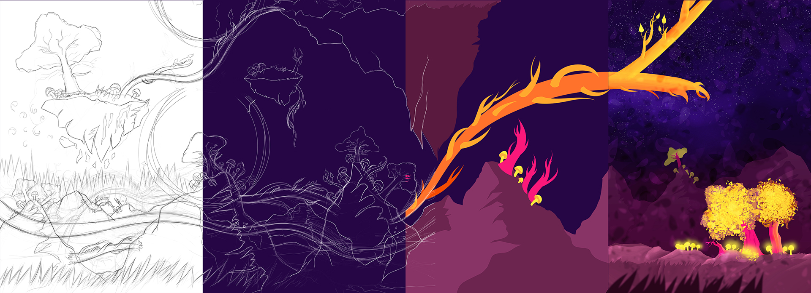Screenshots
 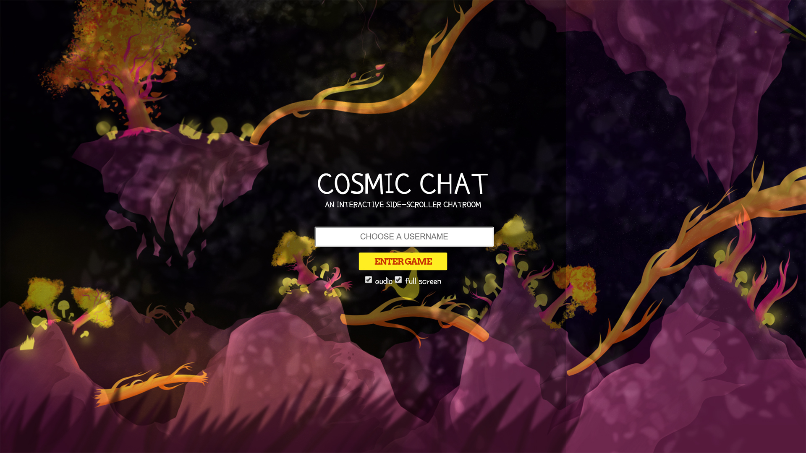
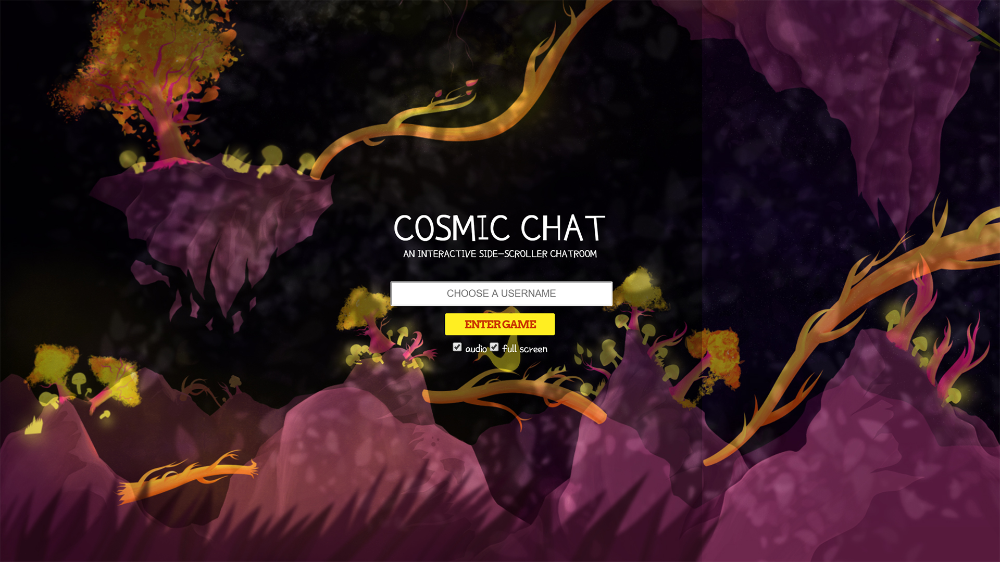


I also used After Effects to animate some of the sprites, and I produced music that fits the tone of Cosmic Chat's universe.
 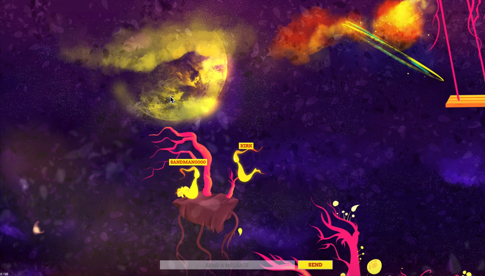
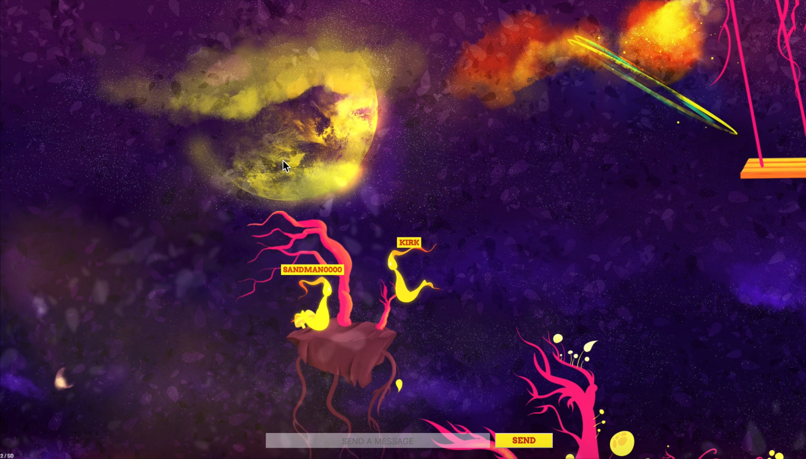
 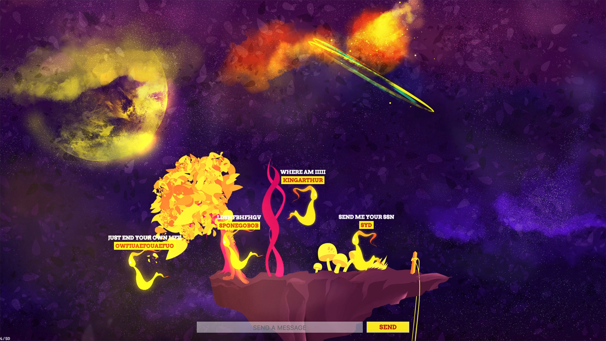
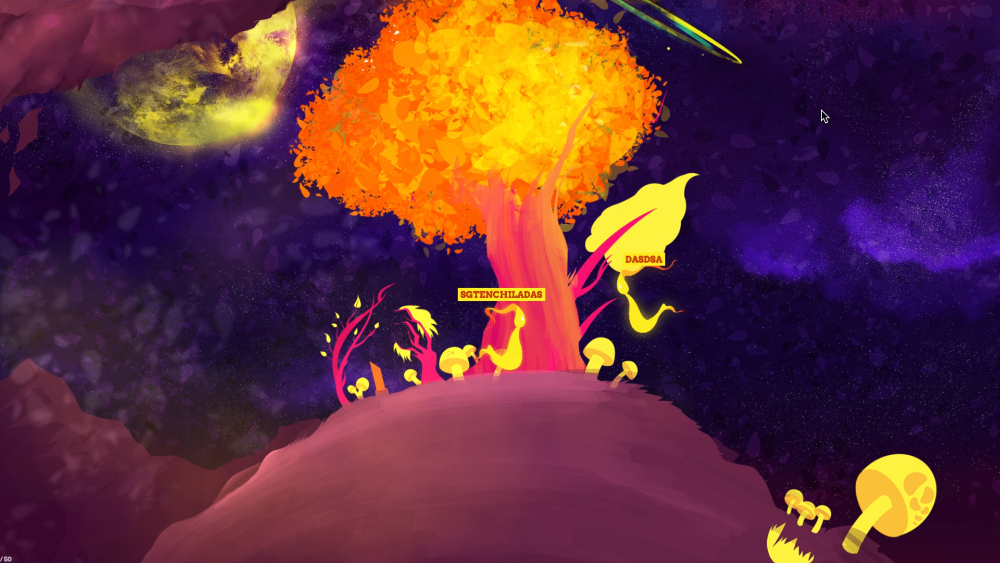
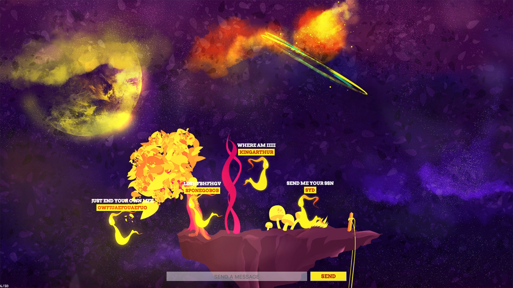
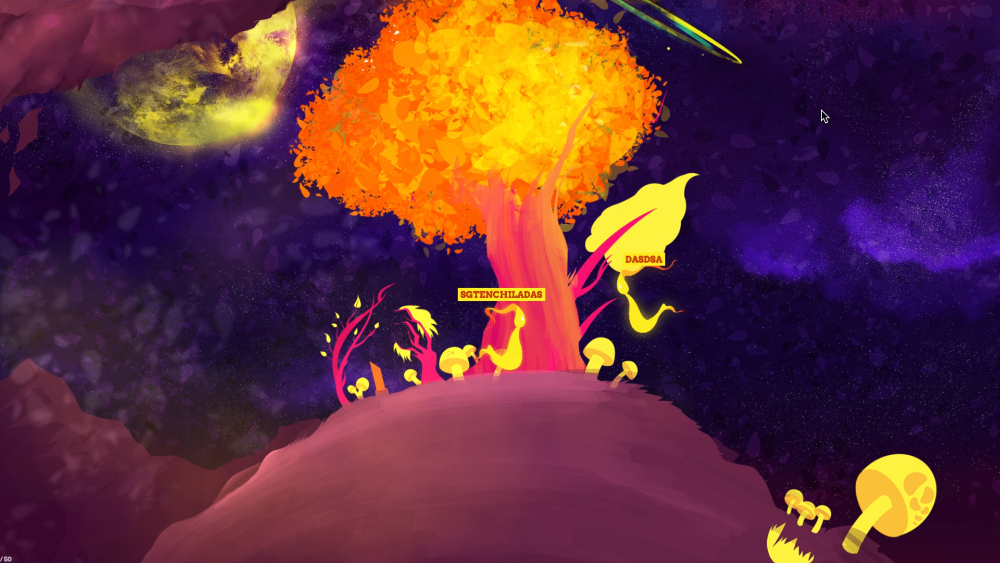
 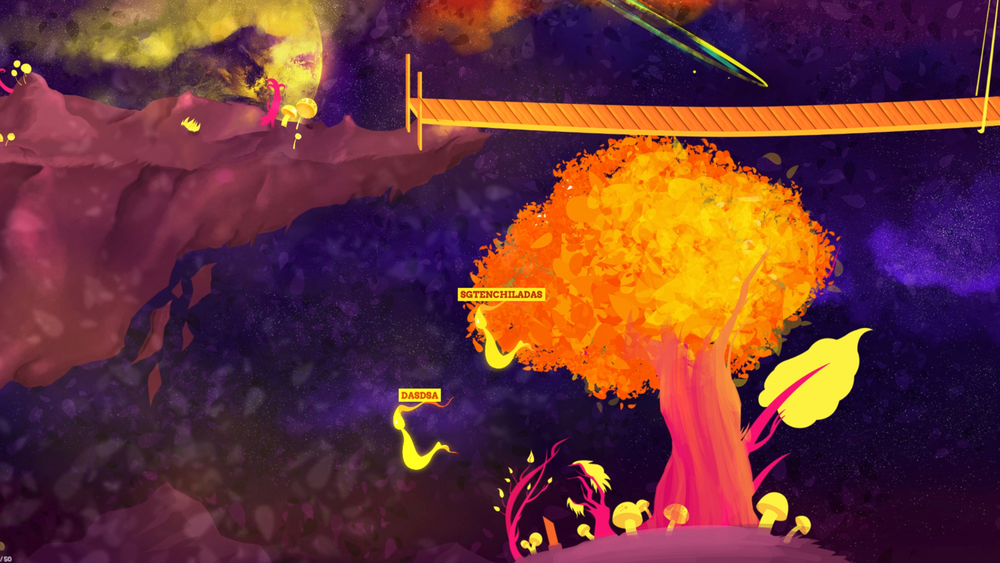
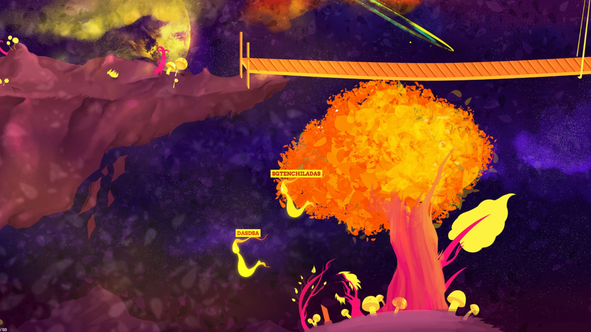
 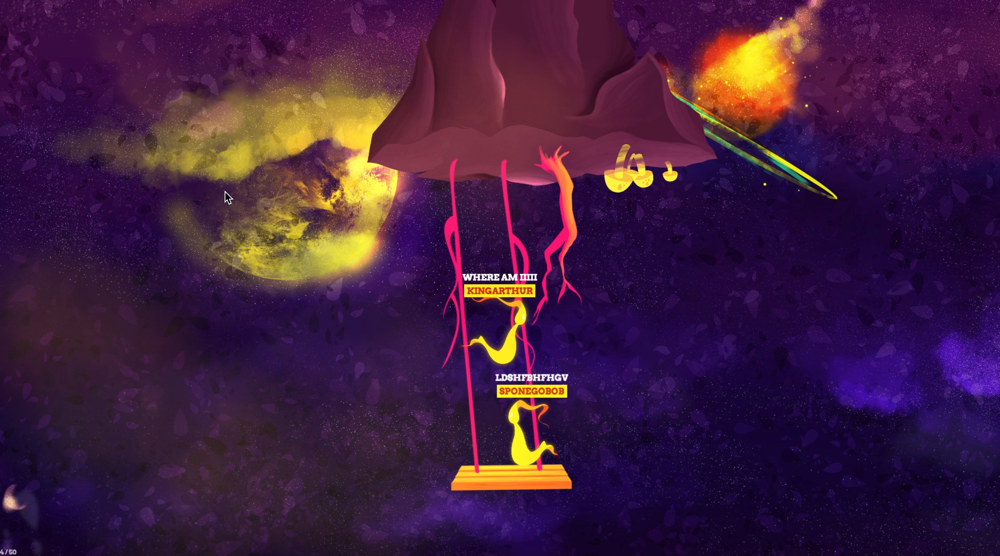
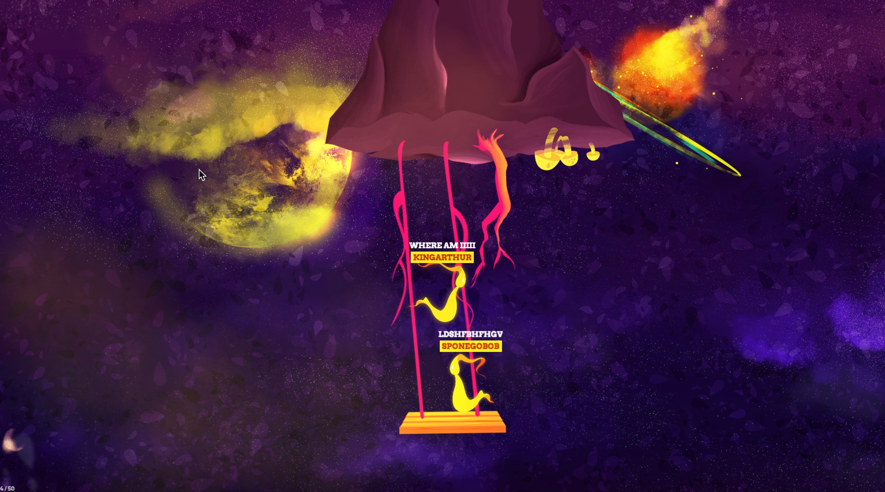
 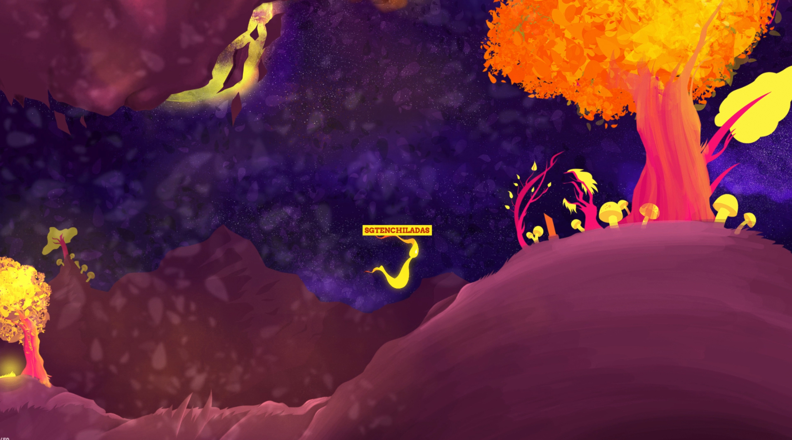
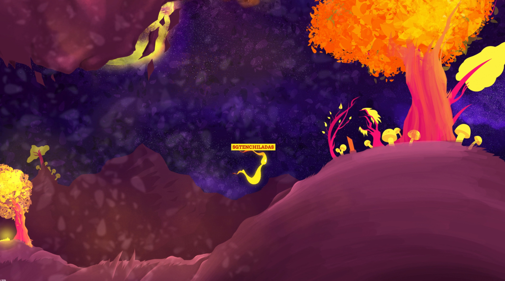